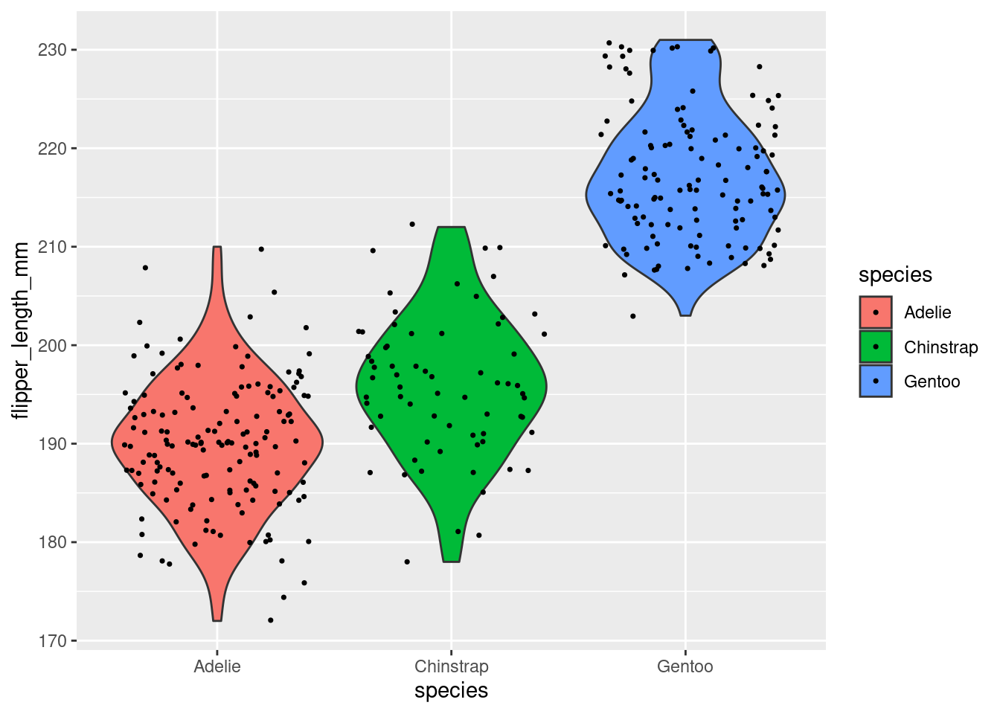

Capítulo 5 Introdução à linguagem R
5.1 Introdução
O objetivo desta seção é apresentar aspectos básicos da linguagem R para que qualquer pessoa possa realizar todos os passos para a análise de dados nessa linguagem. Nela, abordaremos as questões mais básicas sobre a linguagem como: 1) instalação dos softwares (R e RStudio), 2) funcionamento da linguagem, 3) estrutura e manipulação de dados, 4) introdução ao tidyverse e 5) principais erros e como pedir ajuda.
Todo processo de aprendizagem torna-se mais efetivo quando a teoria é combinada com a prática, então recomendamos fortemente que você leitor, acompanhe os códigos e exercícios deste livro, ao mesmo tempo que os executa em seu computador, e não só os leia passivamente. Por motivos de espaço, não abordaremos todas as questões relacionadas ao uso da linguagem R nesta seção. Logo, aconselhamos que o leitor consulte o material sugerido no final dessa seção para se aprofundar.
5.2 R e RStudio
Com o R é possível manipular e analisar dados, visualizar gráficos e escrever desde pequenas linhas de códigos até programas inteiros. O R é a versão em código aberto de uma linguagem de programação criada por John M. Chambers (Stanford University, CA, EUA), nos anos 1980 no Bell Labs, chamada de S, que contou com três versões: Old S (1976-1987), New S (1988-1997) e S4 (1998), utilizada na IDE S-PLUS (1988-2008). Essa linguagem tornou-se bastante popular e vários produtos comerciais que a usam estão disponíveis, como o S-PLUS, SPSS, STATA e SAS.
No final dos anos 1990, Robert Gentleman e Ross Ihaka (Auckland University, NZ), iniciaram o desenvolvimento da versão free da linguagem S, com o seguinto histórico: Desenvolvimento (1997-2000), Versão 1 (2000-2004), Versão 2 (2004-2013), Versão 3 (2013-2020) e Versão 4 (2020). Para mais detalhes do histório de desenvolvimento do S e R, consultar Wickham (2013), sendo que atualmente a linguagem R é mantida por uma rede de colaboradores denominada R Core Team. A origem do nome R é desconhecida, mas reza que ao lançarem o nome da linguagem os autores se valeram da letra que vinha antes do S, uma vez que a linguagem R foi baseada nela, e utilizaram a letra “R.”
Um aspecto digno de nota é que a linguagem R, ao contrário de outras linguagem como Fortran e C que são compiladas, é uma linguagem interpretada, o que a faz ser mais fácil de programar, pois processa linhas de comando e as transforma em linguagem de máquina (código binário que o computador efetivamente lê), apesar desse fato diminuir a velocidade de processamento.
Para começarmos a trabalhar com o R é necessário baixá-lo na página do R Project. Então, acesse esse site, e em seguida, clique no link download R, que o levará à pagina do CRAN Mirros (Comprehensive R Archive Network). Escolha a página espelho do Brasil mais próxima de você para baixar o programa. Escolha agora o sistema operacional do seu computador (passos adicionais existem para diferentes distribuições Linux), para Windows, clique em base para finalmente chegar à página de download com a versão mais recente do R.
Reserve algum tempo posteriormente para explorar esta página do R-Project. Existem vários livros dedicados a diversos assuntos baseados no R. Além disso, estão disponíveis manuais em diversas línguas para serem baixados gratuitamente.
Como o R é um software livre, não existe a possibilidade de o usuário entrar em contato com um serviço de suporte de usuários, muito comuns em softwares pagos. Ao invés disso, existem várias listas de emails que fornecem suporte à comunidade de usuários. Nós, particularmente, recomendamos o ingresso nas seguintes listas: R-help, R-sig-ecology, e R-br. Este último representa um grupo de usuários brasileiro do programa R.
Apesar de podemos utilizar o R com a IDE (Ambiente de Desenvolvimento Integrado - Integrated Development Environment) RGui que vem com a instalação da linguagem, para usuários Windows (Figura 5.1) ou no próprio terminal para usuários Linux e MacOS, existem alguns IDEs específicos para facilitar nosso uso dessa linguagem.

Figura 5.1: Interface do RGui. Os números indicam: (1) script, (2) console, e (3) janela do plot.
Entretanto, desde 2011, um IDE se tornou mais popular na comunidade: o RStudio (Figura 5.2). O RStudio possui algumas características que o tornam tão popular: várias janelas de visualização, marcação e preenchimento automático do script, integração com controle de versão, dentre outras opções. Para fazer o download do RStudio, acessamos o site, e escolhemos o instalador com base em nosso sistema operacional.
Um último ponto técnico importante: para evitar possíveis erros, é interessante instalar primeiro a linguagem R, seguida do IDE RStudio.
5.3 Funcionamento da linguagem R
Nesta seção veremos o principais conceitos para entender como a linguagem funciona ou como geralmente utilizamos o IDE RStudio no dia-a-dia, para executar nossas rotinas utilizando a linguagem R. Veremos então: 1) console, 2) script (editor/roteiro), 3) objetos (variáveis), 4) operadores, 5 ) funções, 6) pacotes, 7) ambiente (environment/workspace), 8) ajuda (help) e 9) citações.
Antes de iniciarmos propriamente dito, é fundamental entendermos alguns pontos sobre as janelas e o funcionamento delas no RStudio (Figura 5.2).

Figura 5.2: Interface do RStudio. Os números indicam: (1) script, (2) console, (3) janela com abas de ambiente, histórico, git, conexões, tutorial, e (4) janela com abas de arquivos, plot, pacotes, ajuda e visualizador.
Detalhando algumas dessas janelas, temos:
- Console: é onde os códigos são rodados e vemos as saídas
- Editor/Script: é onde escrevemos nossos códigos em R ou R Markdown
- Environment: painel com todos os objetos criados na sessão
- History: painel com o histórico dos comandos rodados
- Files: painel que mostra os arquivos no diretório de trabalho
- Plots: painel onde os gráficos são apresentados
- Packages: painel que lista os pacotes
- Help: painel onde a documentação das funções é exibida
No RStudio, alguns atalhos são fundamentais para aumentar nossa produtividade:
- f1: abre o painel de Help
- ctrl + Enter: roda a linha selecionada no script
- ctrl + Shift + N: abre um novo script
- ctrl + S: salva um script
- ctrl + Z: desfaz uma operação
- ctrl + shift + Z: refaz uma operação
- alt + -: insere um sinal de atribuição (<-)
- ctrl + Shift + M: insere um operador pipe (%>%)
- ctrl + Shift + C: comenta uma linha no script - insere um (#)
- ctrl + Shift + R: insere uma sessão (# ———————-)
- ctrl + Shift + H: abre uma janela para selecionar o diretório de trabalho
- ctrl + Shift + f10: reinicia o console
- ctrl + L: limpa os comandos do console
- alt + Shift + K: abre uma janela com todos os atalhos disponíveis
5.3.1 Console
O console é onde a versão da linguagem R instalada é carregada para executar os códigos da linguagem (Figura 5.2 (2)). Na janela do console irá aparecer o símbolo > seguida de uma barra vertical | que fica piscando, onde iremos digitar ou enviar nossos códigos do script. Podemos fazer um pequeno exercício: vamos digitar 2 + 2, seguido da tecla Enter para que essa operação seja executada.
10 + 2## [1] 12O resultado retorna o valor 12, precedido de um valor entre colchetes. Esses colchetes demonstram a posição do elemento numa sequência de valores. Se fizermos essa outra operação 1:42, o R vai criar uma sequência unitária de valores de 1 a 42. A depender da largura da janela do console, vai aparecer um número diferente entre colchete indicando sua posição na sequência: antes do 1 vai aparecer o [1], depois quando a sequência for quebrada, vai aparecer o número correspondente da posição do elemento, no nosso caso [26].
1:42## [1] 1 2 3 4 5 6 7 8 9 10 11 12 13 14 15 16 17 18 19 20 21 22 23 24 25
## [26] 26 27 28 29 30 31 32 33 34 35 36 37 38 39 40 41 425.3.2 Scripts
Scripts são rascunhos dos códigos, e onde de fato os códigos são escritos e depois enviados ao console (Figura 5.2 (1)). Scripts são arquivos de texto simples, criados com a extensão (terminação) .R. Para criar um script basta ir em File > New File > R Script, ou clicando no ícone logo abaixo de File, ou ainda usando o atalho ctrl + shift + N.
Uma vez escrito os códigos no script, podemos rodar esses códigos de duas formas: 1)
todo o script de uma vez, clicando em Source ou usando o atalho ctrl + shift + enter; 2) a linha onde o cursos estiver posicionado, independente de sua posição naquela linha, clicando em Run ou usando o atalho ctrl + enter.
Devemos sempre salvar nossos scripts, tomando por via de regra: primeiro criar o arquivo e depois ir salvando versão desse mesmo arquivo. Há diversos motivos para criar um script: continuar o desenvolvimento do mesmo em outro momento ou em outro computador, preservar trabalhos passados, ou ainda compartilhar seus códigos com outra pessoa. Para criar ou salvar um script basta ir em File > Save, escolher um diretório e nome para o script, e salvar. Podemos ainda utilizar o atalho ctrl + S.
Em relação aos scripts, ainda há os comentários, representados pelos símbolos # (hash) ou #' (hash-linha). Comentários não são lidos pelo console do R e são utilizados geralmente para descrever informações sobre dados ou funções, ou ainda para suprimir linhas de código. É interessante ter no início de cada script um cabeçalho identificando o objetivo ou análise, autor e data.
#' ---
#' title: capitulo 04 - introducao ao r
#' author: mauricio vancine
#' date: 2021-02-17
#' ---Além disso, podemos usar comentários para adicionar informações sobre os códigos.
# comentarios
# o r nao le o codigo depois do # (hash)
42 # essas palavras nao sao executadas, apenas o 42## [1] 42Um ponto muito importante é escrever os comentários sempre em inglês para tornar seu código mais reprodutível possível. Por fim, outro ponto fundamental é ter boas práticas de estilo de código. Quanto mais organizado e padronizado estiver os scripts, mais fácil de entendê-los e de procurar possíveis erros. Existem dois guias de boas práticas para adequadar seus scripts: Hadley Wickham e Google.
5.3.3 Operadores
No R, temos cinco tipos de operadores: aritméticos, relacionais, lógicos, atribuição e diversos. Todos são descritos na Tabela 5.1.
| Operador | Tipo | Descrição |
|---|---|---|
| + | Aritmético | Adição |
| - | Aritmético | Subtração |
| * | Aritmético | Multiplicação |
| / | Aritmético | Divisão |
| %% | Aritmético | Restante da divisão |
| %/% | Aritmético | Quociente da divisão |
| ^ ou ** | Aritmético | Expoente |
| > | Relacional | Maior |
| < | Relacional | Menor |
| >= | Relacional | Maior ou igual |
| <= | Relacional | Menor ou igual |
| == | Relacional | Igualdade |
| != | Relacional | Diferença |
| ! | Lógico | Lógico NÃO |
| & | Lógico | Lógico elementar E |
| | | Lógico | Lógico elementar OU |
| && | Lógico | Lógico E |
| || | Lógico | Lógico OU |
| <- ou = | Atribuição | Atribuição à esquerda |
| <<- | Atribuição | Super atribuição à esquerda |
| -> | Atribuição | Atribuição à direita |
| ->> | Atribuição | Super atribuição à direita |
| : | Diversos | Sequência unitária |
| %in% | Diversos | Elementos que pertencem a um vetor |
| %*% | Diversos | Multiplar matriz com sua transposta |
| %>% | Diversos | pipe |
Como exemplo, podemos fazer operações simples usando os operadores aritméticos.
# operacoes aritmeticas
10 + 2 # adicao## [1] 1210 * 2 # multiplicacao## [1] 20Precisamos ficar atentos à dominância dos operadores aritméticos: ^ >> * ou / >> + ou -. Veja no exemplo abaixo como o uso dos parênteses mudam os resultados.
# sem especificar - segue a ordem dos operadores
1 * 2 + 2 / 2 ^ 2## [1] 2.5# especificando - segue a ordem dos parenteses
((1 * 2) + (2 / 2)) ^ 2## [1] 95.3.4 Objetos
Objetos são palavras às quais são atribuídos dados. Essa atribuição possibilita a manipulação de dados ou resultados de análises. Iremos utilizar os símbolos < (menor), seguido de - (menos), sem espaço, dessa forma <-. Também podemos utilizar o símbolo de igual (=), mas não recomendamos, por não fazer parte das boas práticas de escrita em código R. Podemos inserir essa combinação de símbolos com o atalho alt + -. Para demonstrar, vamos atribuir o valor 10 à palavra obj_10, e chamar esse objeto novamente para verificar seu conteúdo.
# atribuicao - simbolo (<-)
obj_10 <- 10
obj_10## [1] 10Todos os objetos criados numa sessão do R ficam listados na aba Environment (Figura 5.2 (3)). Além disso, o RStudio possui a função auto complete, ou seja, podemos digitar as primeiras letras de um objeto (ou função) e em seguida apertar Tab para que o RStudio liste tudo que começar com essas letras.
Dois pontos importantes sobre atribuições: primeiro, o R sobrescreve os valores dos objetos com o mesmo nome, deixando o objeto com o valor da segunda atribuição.
# sobrescreve o valor dos objetos
obj <- 100
obj## [1] 100# obj agora vale 2
obj <- 2
obj## [1] 2Segundo, o R tem limitações ao nomear objetos:
- nome de objetos só podem começar por letras (a-z ou A-Z) ou pontos (.)
- nome de objetos só podem conter letras (a-z ou A-Z), números (0-9), underscores (_) ou pontos (.)
- R é case-sensitive, i.e., ele difere letras maiúsculas de minúsculas. Assim, um objeto chamado “resposta” é diferente do objeto “RESPOSTA”
- devemos evitar acentos ou cedilha (ç) para facilitar a memorização dos objetos
- nome de objetos não podem ser iguais a nomes especies (
break,else,FALSE,for,function,if,Inf,NA,NaN,next,repeat,return,TRUE,while)
Podemos ainda utilizar objetos para fazer operações e criar novos objetos. Isso pode parecer um pouco confuso para os iniciantes na linguagem, mas é fundamental aprender essa lógica para passar para os próximos passos.
# definir dois objetos
va1 <- 10
va2 <- 2
# operacoes com objetos e atribuicao
adi <- va1 + va2
adi## [1] 125.3.5 Funções
Funções são códigos preparados para realizar uma tarefa de modo simples. Outra forma de entender uma função é: comandos que realizam operações em argumentos. A estrutura de uma função é muito similar à sintaxe usada em planilhas eletrônicas, sendo composta por:
nome_da_funcao(argumento1, argumento2)
- nome da função: remete ao que ela faz
- Parênteses: limitam a função
- Argumentos: onde a função irá atuar
- Vírgulas: separam os argumentos
Os argumentos de uma função podem ser de dois tipos:
- Valores ou objetos: a função irá alterar os valores em si ou os valores atribuídos aos objetos
- Parâmetros: valores fixos que informam um método ou a realização de uma operação. Informa-se o nome desse argumento, seguido de “=” e um número, texto ou TRUE ou FALSE
Alguns exemplos de argumentos como valores ou objetos.
# funcoes - argumentos como valores
# soma
sum(10, 2)## [1] 12# funcoes - argumentos como objetos
# soma
sum(va1, va2)## [1] 12Alguns exemplos de argumentos como parâmetros. Note que apesar do valor do argumento ser o mesmo (10), seu efeito no resultado muda drasticamente. Aqui também é importante destacar um ponto: 1 podemos informar os argumentos sequencialmente, sem explicitar seus nomes, ou 2) independente da ordem, mas explicitando seus nomes. Entretanto, como no exemplo abaixo, devemos informar o nome do argumento (i.e., parâmetro), para que seu efeito seja o que desejamos.
# funcoes - argumentos como parametros
# repeticao - repita todos os elementos
rep(x = 1:5, times = 10)## [1] 1 2 3 4 5 1 2 3 4 5 1 2 3 4 5 1 2 3 4 5 1 2 3 4 5 1 2 3 4 5 1 2 3 4 5 1 2 3
## [39] 4 5 1 2 3 4 5 1 2 3 4 5# repeticao - repita cada um dos elementos
rep(x = 1:5, each = 10)## [1] 1 1 1 1 1 1 1 1 1 1 2 2 2 2 2 2 2 2 2 2 3 3 3 3 3 3 3 3 3 3 4 4 4 4 4 4 4 4
## [39] 4 4 5 5 5 5 5 5 5 5 5 5Um ponto fundamental, e que deve ser entendido nesse ponto, é o fluxo de atribuições do resultado da operação de funções a novos objetos. No desenvolvimento de qualquer script, grande parte da estrutura do mesmo será dessa forma: atribuição de dados > operações com funções > atribuição dos resultados a novos objetos > operações com funções desses novos objetos > atribuição dos resultados a novaos objetos….Ao entender esse funcionamento, começamos a entender como devemos pensar na organização do nosso script para montar as análises de que precisamos.
# atribuicao dos resultados
# repeticao
rep_times <- rep(x = 1:5, times = 10)
rep_times## [1] 1 2 3 4 5 1 2 3 4 5 1 2 3 4 5 1 2 3 4 5 1 2 3 4 5 1 2 3 4 5 1 2 3 4 5 1 2 3
## [39] 4 5 1 2 3 4 5 1 2 3 4 5# somar e atribuir
rep_times_soma <- sum(rep_times)
rep_times_soma## [1] 150# raiz e atribuir
rep_times_soma_raiz <- sqrt(rep_times_soma)
rep_times_soma_raiz## [1] 12.24745Por fim, é fundamental também entender a origem das funções que usamos no R. Todas as funções são advindas de pacotes. Esses pacotes possuem duas origens.
- pacotes já instalados por padrão e que são carregados quando abrimos o R (R Base)
- pacotes que instalamos e carregamos com funções
5.3.6 Pacotes
Pacotes são conjunto extras de funções para executar tarefas específicas, além do R Base. Existe literalmente milhares de pacotes para as mais diversas tarefas: estatística, ecologia, geografia, sensoriamento remoto, econometria, ciências sociais, gráficos, machine learning etc. Podemos verificar este vasto conjunto de pacotes pelo link que lista por nome os pacotes oficiais, ou seja, que passaram pelo crivo do CRAN. Existem ainda muito mais pacotes em desenvolvimento, geralmente disponibilizados em repositórios do GitHub ou GitLab.
Primeiramente, com uma sessão do R sem carregar nenhum pacote extra, podemos verificar pacotes carregados pelo R Base utilizando a função search().
# verificar pacotes carregados
search()Podemos ainda verificar todos pacotes instalados em seu computador com a função library().
# verificar pacotes instalados
library()No R, quando tratamos de pacotes, devemos destacar dois conceitos: instalar um pacote e carregar um pacote. A instalação de pacotes possui alguns características:
- Instala-se apenas uma vez
- Precisa estar conectado à internet
- O nome do pacote precisa estar entre aspas
- Função (CRAN):
install.packages()
Vamos instalar o pacote vegan diretamente do CRAN, que possui funções para realizar uma série de análise em ecologia. Para isso, vamos utilizar a função install.packages().
# instalar pacotes
install.packages("vegan")Uma vez instalado um pacote, não há necessidade de instalá-lo novamente. Entretanto, todas as vezes que iniciarmos uma sessão no R, precisamos carregar os pacotes com as funções que precisamos utilizar. O carregamento de pacotes possui alguns características:
- Carrega-se toda vez que se abre uma nova sessão do R
- Não precisa estar conectado à internet
- O nome do pacote não precisa estar entre aspas
- Funções:
library()ourequire()
Vamos carregar o pacote vegan que instalamos anteriormente, utilizando a função library().
# carregar pacotes
library(vegan)Como dissemos anteriormente, alguns pacotes em desenvlvimento encontram-se disponíveis em repositórios do GitHub ou GitLab. Para instalar pacotes do GitHub, por exemplo, precisamos instalar e carregar o pacote devtools.
# instalar pacote devtools
install.packages("devtools")
# carregar pacote devtools
library(devtools)Uma vez instalado e carregado este pacote, podemos instalar o pacote do GitHub, utilizando a função devtoools::install_github(). Precisamos atentar para usar essa forma “nome_usuario/nome_repositorio,” retirados do link do repositório de interesse. Como exemplo, podemos instalar mesmo pacote vegan do repositório do GitHub vegandevs/vegan, e depois utilizar a função library() para carregá-lo normalmente.
# instalar pacote do github
install_github("vegandevs/vegan")
# carregar pacote do github
library("vegan")A maioria dos pacotes vem com bancos de dados que podem ser acessados pela função data(). Esses bancos de dados podem ser usados para testar as funções do pacote. Se estiver com dúvida na maneira como você deve preparar a planilha para realizar uma análise específica, entre no help da função e veja os conjuntos de dados que estão no exemplo desta função.
Um último ponto fundamental de pacotes, diz respeito à atualização dos mesmos. Os pacotes são atualizados com frequência, e infelizmente ou felizmente (pois as atualizações podem oferecer algumas quebras entre pacotes), não se atualizam sozinhos. Muitas vezes, a instalação de um pacote pode depender da versão dos pacotes dependentes, e geralmente uma janela se abre que todos os pacotes dependentes sejam atualizados. Como isso pode demorar, pode ser interessante utilizar a função update.packages(ask = FALSE) para atualizá-los, entretanto, essa é uma função que costuma demorar para terminar de rodar.
# atualizacao dos pacotes instalados
update.packages(ask = FALSE)5.3.7 Ajuda (help)
Um importante passo para melhorar a usuabilidade e ter mais familiaridade com a linguagem R é aprender a usar a ajuda de cada função. Para tanto, podemos utilizar a função help() ou o operador ?, depois de ter carregado o pacote, para abri uma nova aba (Figura 5.2 (4)) que possui diversas informações sobre a função de interesse. O arquivo de ajuda do R possui geralmente nove ou dez tópicos, que nos auxiliam muito no entendimento dos dados de entrada, argumento e que operações estão sendo realizadas:
- Description: resumo da função
- Usage: como utilizar a função e quais os seus argumentos
- Arguments: detalha os argumentos e como os mesmos devem ser especifidados
- Details: detalhes importantes para se usar a função
- Value: mostra como interpretar a saída (output) da função (os resultados)
- Note: notas gerais sobre a função
- Authors: autores da função
- References: referências bibliográficas para os métodos usados pra construir a função
- See also: funções relacionadas
- Examples: exemplos do uso da função. Às vezes pode ser útil copiar esse trecho e colar no R para ver como funciona e como usar a função.
Vamos realizar um exemplo, buscando o help da função aov().
# help
help(aov)
?aovAlém das funções, podemos buscas detalhes de um pacote em específico, para uma página simples do help utilizando a função help() ou o operador ?. Entretanto, para uma opção que ofereça uma descrição detalhada e um índice de todas as funções do pacote, podemos utilizar a função library(), mas agora utilizando o argumento “help,” indicamos o pacote de interesse entre aspas.
# help do pacote
help(vegan)
?vegan
# help detalhado
library(help = "vegan")Outra ferramenta de busca é a página rseek, na qual é possível buscar por um termo não só nos pacotes do R, mas também em listas de emails, manuais, páginas na internet e livros sobre o programa.
5.3.8 Citações
Ao utilizar o R para realizar alguma análise em seus estudos ecológicos, é fundamental a citação do mesmo. Para saber como citar exatamente o R em artigos, existe uma função denominada citation(), que provê um formato genérico de citação e um BibTeX para arquivos LaTeX e R Markdown.
# citacao do R
citation()##
## To cite R in publications use:
##
## R Core Team (2021). R: A language and environment for statistical
## computing. R Foundation for Statistical Computing, Vienna, Austria.
## URL https://www.R-project.org/.
##
## A BibTeX entry for LaTeX users is
##
## @Manual{,
## title = {R: A Language and Environment for Statistical Computing},
## author = {{R Core Team}},
## organization = {R Foundation for Statistical Computing},
## address = {Vienna, Austria},
## year = {2021},
## url = {https://www.R-project.org/},
## }
##
## We have invested a lot of time and effort in creating R, please cite it
## when using it for data analysis. See also 'citation("pkgname")' for
## citing R packages.No resultado dessa função, há uma mensagem muito interessante: “See also ‘citation(“pkgname”)’ for citing R packages.” Dessa forma, aconselhamos os usuários de R a citar também os pacotes que utilizaram em suas análises para dar os devidos créditos aos desenvolvedores das funções implementadas nos pacotes. Como exemplo, vamos ver como fica a citação do pacote vegan.
# citacao do pacote vegan
citation("vegan")##
## To cite package 'vegan' in publications use:
##
## Jari Oksanen, F. Guillaume Blanchet, Michael Friendly, Roeland Kindt,
## Pierre Legendre, Dan McGlinn, Peter R. Minchin, R. B. O'Hara, Gavin
## L. Simpson, Peter Solymos, M. Henry H. Stevens, Eduard Szoecs and
## Helene Wagner (2020). vegan: Community Ecology Package. R package
## version 2.5-7. https://CRAN.R-project.org/package=vegan
##
## A BibTeX entry for LaTeX users is
##
## @Manual{,
## title = {vegan: Community Ecology Package},
## author = {Jari Oksanen and F. Guillaume Blanchet and Michael Friendly and Roeland Kindt and Pierre Legendre and Dan McGlinn and Peter R. Minchin and R. B. O'Hara and Gavin L. Simpson and Peter Solymos and M. Henry H. Stevens and Eduard Szoecs and Helene Wagner},
## year = {2020},
## note = {R package version 2.5-7},
## url = {https://CRAN.R-project.org/package=vegan},
## }
##
## ATTENTION: This citation information has been auto-generated from the
## package DESCRIPTION file and may need manual editing, see
## 'help("citation")'.5.3.9 Principais erros dos iniciantes
Errar quando se está iniciando com R é muito comum e faz parte do aprendizado. Entretanto, os erros nunca devem ser encarados como uma forma de desestímulo para continuar tentando. Todos nós, autores desse livro, e provavelmente usuários muito experientes já passaram por um momento em que se quer desistir de tudo. Jovem aprendiz de R, a única diferença entre você que está iniciando agora e nós que usamos há mais tempo, são as horas de uso (e raiva). O que temos a mais é experiência para olhar o erro, lê-lo e conseguir interpretar.
Dessa forma, o ponto mais importante de quem está iniciando é ter paciência, calma, bom humor, ler e entender a mensagem de erro. Iremos listar aqui o que consideramos os princiais erros dos iniciantes no R.
1. Esquecer de completar uma função ou bloco de comandos
Esquecer de completar uma função ou bloco de comandos é algo bem comum. Geralmente esquecemos de fechar aspas "" ou parênteses (), mas felizmente geralmente o R nos informa isso, indicando um símbolo de +. `
sum(1, 2
+## Error: <text>:3:0: unexpected end of input
## 1: sum(1, 2
## 2: +
## ^2. Esquecer da vírgula
Outro erro bastante comum é esquecer de acrescentar a vírgula , para separar argumentos dentro de uma função, principalmente se estamos compondo várias função acopladas, i.e., uma função dentro da outra.
sum(1 2)## Error: <text>:1:7: unexpected numeric constant
## 1: sum(1 2
## ^3. Chamar um objeto errado
Pode parecer simples, mas esse é de longo o erro que as pessoas mais me interrompiam no laboratório. Quando estamos mais avançados e temos um longo script, fomos atribundo diversos objetos e em algum momento atribuímos um nome do qual não lembramos. E aí, quando chamamos o objeto ele não existe e devolve um erro, que pode ser facilmente identificado, como o exemplo abaixo.
obj <- 10
OBJ## Error in eval(expr, envir, enclos): object 'OBJ' not found4. Esquecer de carregar um pacote
Esse também um erro recorrentes, mesmo para usuários mais experientes. Em scripts de análises complexas, que requerem vários pacotes, geralmente esquecemos de um ou outro… A melhor forma de evitar esse tipo de erro é listar o pacotes que vamos precisar usar logo no início do script.
ggplot(iris) + aes(Sepal.Length, Sepal.Width) + geom_point() + theme_bw()## Error in ggplot(iris): could not find function "ggplot"library(ggplot2)
ggplot(iris) + aes(Sepal.Length, Sepal.Width) + geom_point() + theme_bw()
5. Usar o nome da função de forma errônea
Esse erro não é tão comum, mas pode ser incômodo às vezes. Algumas funções possuem nomes no padrão “Camel Case,” i.e., com letras maiúsculas para no meio do nome da função. Isso às vezes pode confundir, ou ainda, as funções podem ou não ser separadas com ., como row.names() e colnames. Na seção de tidyverse, veremos que houve uma padronização nos nomes das funções para “Snake Case,” i.e, todas as funções possuem letras minúsculas, com palavras separadas por underscore _.
colsums(iris[, -5])## Error in colsums(iris[, -5]): could not find function "colsums"colSums(iris[, -5])## Sepal.Length Sepal.Width Petal.Length Petal.Width
## 876.5 458.6 563.7 179.95.4 Estrutura e manipulação de dados
5.4.1 Atributo dos objetos
5.4.2 Modo dos objetos
numeric, character e logical
5.4.3 Estrutura dos objetos
vetor, fator, matriz, data frame, lista, funções
5.4.4 Manipulação de dados unidimensionais
5.4.5 Manipulação de dados bidimensionais
5.4.6 Valores faltantes e especiais
5.4.7 Diretório de trabalho
5.4.8 Importar dados
5.4.9 Conferir e manejar dados importados
5.4.10 Exportar dados
5.5 Introdução ao tidyverse
Como já dito, eventualmente as funções do R base não são suficientes ou simplesmente não fornecem a maneira mais fácil de resolver-se um problema. Neste curso utilizaremos o Tidyverse: uma coleção de pacotes R cuidadosamente desenhados para atuarem no workflow comum da ciência de dados: importação, manipulação, exploração e visualização de dados. Uma vez carregado, esse pacote disponibiliza todo o conjunto de ferramentas de outros pacotes importantes: ggplot2, tibble, tidyr, readr, purrr e dplyr. Oportunamente, detalharemos cada um deles.
O Tidyverse foi idealizado, dentre outros responsáveis, por Hadley Wickham, um dos maiores colaboradores da comunidade R. Se você não o conhece e pretende seguir em frente com o R, certamente ouvirá falar muito dele. Recomendamos segui-lo nas redes sociais para ficar por dentro das novidades do Tidyverse.
Para instalar os pacotes do Tidyverse, rode o comando abaixo: